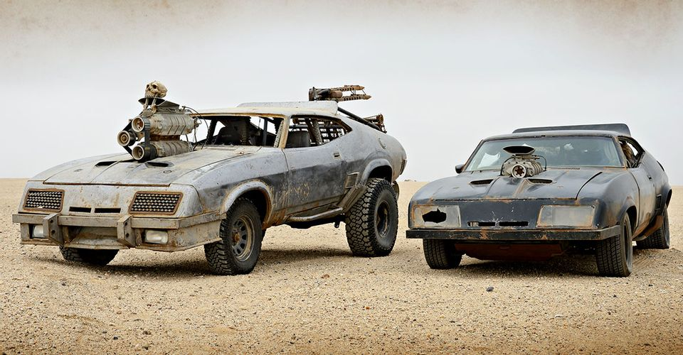
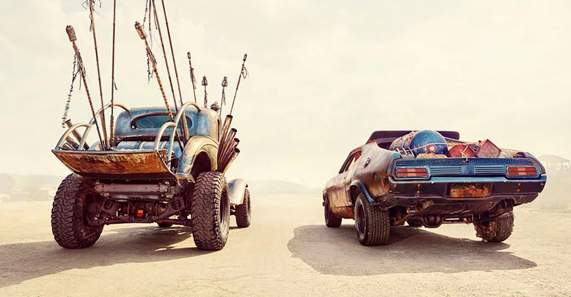
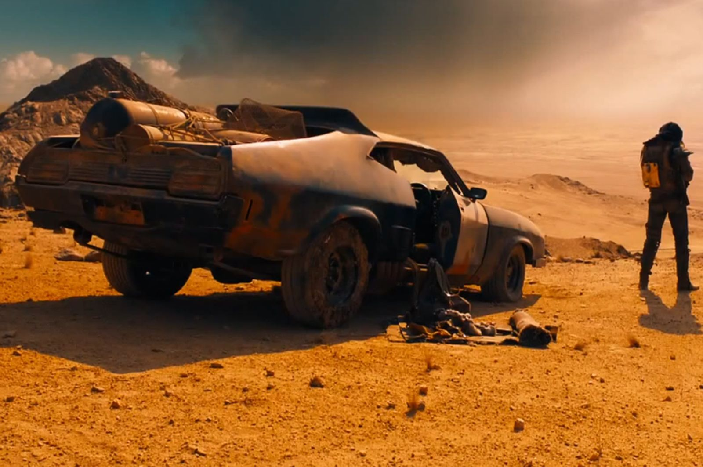

본문 콘텐츠 영역
- Gorge Miller Reveals Furiosa's...
- Mad Max: Fury Road’s breakout heroine Furiosa is getting her own prequel spinoff, but the fate of her future remains unknown. Played by Charlize Theron...
- August 18, 2020
- more +
- 20 Little Known Facts About The...
- 
- In 1979, Mad Max helped change the face of action cinema. The action film from Australia helped launch Mel Gibson’s career as a lawman in a lawless...
- APR 08, 2019
- more +
- Mad Max: Fury Road, Animal...
- Fifty-one film critics across Australia ranked George Miller's adrenaline-fueled, post-apocalyptic film Mad Max: Fury Road as the best Australian film...
- July 25, 2018
- more +
- 24 Cool Facts About The Cars From...
- 
- How many cars can readers name from any of the Mad Max movies? Is there one car that really speaks to each reader here? Well, so we're clear, not all...
- JUN 28, 2018
- more +
- Charlize Theron Would 'Love' to...
- Charlize Theron has spoken of her eagerness to return to the world of Mad Max. In an interview to promote her upcoming action-movie Atomic....
- JUL 11, 2017
- more +
- Mad Max: Fury Road's black-and...
- After a lot of rumor and speculation, Mad Max: Fury Road is finally going to be available in the US in black and white...
- Sep 16, 2016
- more +
- 'Mad Max' Director George...
- George Miller's latest Mad Max film, Fury Road, has been nominated for 10 Academy Awards, but the director still isn't sure how the movie will hold up...
- February 8, 2016
- more +
- Mad Max reboot named...
- Futuristic sequel Mad Max: Fury Road has been named film of the year by the influential National Board of Review. The New York-based collective...
- December 2, 2015
- more +
- The man behind the...
- One of the best parts of "Mad Max: Fury Road," aside from the visuals and the non-stop car action, is definitely the man playing a solo rock...
- May 21, 2015
- more +
- Frenzy on Fury Road...
- A cortege of battletrucks tears across the desert. A muscle-bound maniac roars pretty nothings at the bleak sky. A bald boy, face painted white...
- May 14, 2015
- more +
- Mad Max: Fury Road Trailer Debuts
- 
- Mad Max is back, and the new trailer for the upcoming Mad Max: Fury Road film shows off some pretty wild action in the Australian desert. Directed...
- Jul 29, 2014
- more +

TOP